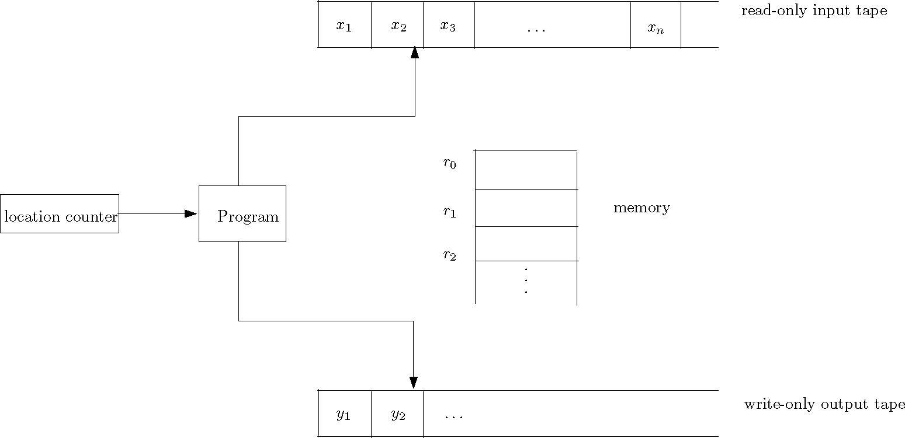
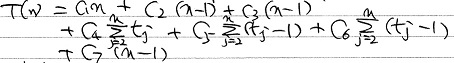
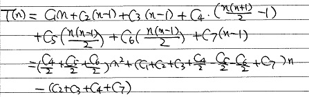
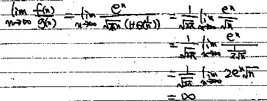

Today I first gave an introduction to this course.
At the beginning of this course, let us learn some basic stuff about algorithm analysis.
Before we analyze algorithms, let us learn how to describe an algorithm precisely. Instead of using "real" code, we use pseudocode to specify an algorithm. In a piece of pseudocode, we use the most clean and concise expressive method to describe a given algorithm. Sometimes, the pseudocode of an algorithm could even use an English sentence to describe a step of this algorithm. For example, if a complicated algorithm requires us to first sort the given input array, then we could write something like "sort the array A in ascending order using mergesort" as its first step. When writing pseudocode, we are not concerned with software engineering issues, such as data abstraction, modularity, and exception & error handling. Thus, pseudocode focuses on conveying the essence of an algorithm.
In this course, you are allowed to follow any convention of pseudocode that you prefer, as long as your pseudocode is readable and consistent. If you do not have any preference yourself, feel free to follow the way in which I write pseudocode, or the convention described in the textbook (Chapter 2).
Now, let's write down the pseudocode of insertion sort, which is a sorting algorithm taught in a previous course, before we analyze its running time.
INSERTION-SORT(A[1..N]) for j ← 2 to n key ← A[j]
i ← j - 1 while i > 0 and A[i] > key
A[i+1] ← A[i]
i ← i - 1
A[i+1] ← key
How to measure the running time of an algorithm? We may be tempted to use wall-clock time, but this is a bad measurement as it highly depends on the computer on which the algorithm is run. Hence, to analyze an algorithm, we need remove computer details such as processor speed, disk and memory, and one way of achieving this is to count the number of elementary operations only. The goal of algorithm analysis is to predict the resources required by an algorithm, and to do this, we need a machine model under which we express our algorithms, and some way of assigning costs of the operations under this model.
We analyze our algorithms under the random-access machine (RAM) model of computation. Algorithms are implimented as computer programs in a RAM.
A figure illustrating RAM:

In this machine model, there are unbounded number of local memory cells (words). An integer or a floating-point number can be stored in a memory cell. Program instructions are executed sequentially, i.e., one after another starting from the first to the last; there is no concurrency. The location counter indicates the instruction of the program that is currently being executed.
In this model, the time complexity (running time) is defined as the number of instructions executed, and the space complexity is the number of memory cells accessed.
The instruction set of RAM contains instructions commonly found in real computers, such as arithmetic operations (add, subtract, multiply, divide, remainder, floor, ceiling), data movement (load, store, copy) and control (conditional & unconditional branch). Each instruction uses 1 unit of time.
[Note: I didn't have time to talk about the following paragraph in Section 2 today, but I will talk about it in Section 2 on Friday] There are instructions in real computers that are not listed above. If your algorithm requires them, then make sure to make reasonable assumptions. For example, the exponentiation operation, i.e., computing x to the power of y, would require a numerical algorithm that is costly, and we would NOT assume that there is an instruction in the RAM that can perform this operation. On the other hand, when k is an integer <= the number of bits in a word, then 2k can be computed using a left shift. Thus we would assume that 2k is a constant-time operation.
[section 2 students need to finish reading the last paragraph of lecture 1 notes]
There are some limitations of the RAM, and more advanced models have been proposed to address these limitations. For example, to introduce concurrency to the RAM model, the PRAM model of computation was proposed. RAM does not consider memory hierarchy; to address this, models such as the external memory model were proposed. These are typically covered in graduate-level courses. To understand these models, a solid background of analyzing algorithms in the RAM is required. Furthermore, in many cases, algorithm analysis under RAM is sufficient. Thus, in this course, we mainly focus on RAM.
1. To analyze algorithms in RAM, we first need understand that the running time of an algorithm is expressed as a function of its input size. This is because the running time of an algorithm normally grows when the size of input grows. We choose reasonable parameters associated with the problem and use them as input size. For example, in sorting, the array size is the input size. In graph algorithms, we often choose the number of vertices and the number of edges as parameters.
2. The general steps of analyzing pseudocode are
3. To use this to analyze insertion sort, we first observe that each line of pseudocode can be implemented using a constant number of RAM instructions. Thus, we let ci be the cost of line i, which is a constant. Then, for each value of j in the outer loop, we let tj be the number of times that the while loop test in line 4 is executed. With these definitions, we have
INSERTION-SORT(A[1..N]) cost times 1 for j ← 2 to n c1 n 2 key ← A[j] c2 n-1
3 i ← j - 1 c3 n-1 4 while i > 0 and A[i] > key c4 ∑j=2,3,...,n tj
5 A[i+1] ← A[i] c5 ∑j=2,3,...,n (tj-1)
6 i ← i - 1 c6 ∑j=2,3,...,n (tj-1)
7 A[i+1] ← key c7 n-1
Now let's calculate the running time as a function of n:

This does not tell us much about the time complexity, as tj is not known and it depends on the actual input. The only thing that we can say about tj is that its value is between 1 and j (inclusive). To make sense of this function, let us see how the input affects the running time.
4. Best Case: In the best case, the input array A is already sorted, as this guarantees that tj is equal to 1. In this case,
T(n) = c1n + c2(n-1) + c3(n-1) + c4(n-1) + c7(n-1) = (c1 + c2 + c3 + c4 + c7) n - (c2 + c3 + c4 + c7)
This is a linear function of n, and thus we say the running time is Θ(n).
5. Worst Case: The case in which the input array A is reverse sorted is the worst case, as this guarantees that tj is equal to j. In this case,

This is a quadratic function of n, and thus we say the running time is Θ(n2).
6. Average Case: To perform the average-case analysis, we need assume that each of the n! permutations of A is equally likely. This is much more complicated, and if you are interested, you could read the following book (available in our library) to find out (not required):
The Art of Computer Programming, Volume 3: Sorting and Searching (2nd Edition), Donald E. Knuth.
If you intend to read this to enrich your knowledge, you could start by reading the discussions on inversions in the input array (5.1.1) and other properties of permutations in the same chapter, Before reading 5.2.1: Sorting by Insertion.
In this course, we mainly (though not always) concentrate on worst-case analysis. As pointed out by the textbook, there are many good reasons: Worst-case analysis gives an upper bound on the running time of the algorithm, guaranteeing the algorithm will not be more costly than the result of the analysis. In many practical applications, the worst-case happens very frequently. For example, when searching for records in a real database application, it is very often that the query would look for some key value that is not in the database. Finally, for many algorithms, the average-case running time is roughly as bad the their worst-case running time.
To appreciate the importance of good algorithm design, take the problem of sorting an array of SIN numbers for example. According to the data published by Statistics Canada, at the end of 2015, the population in Canada is roughly 34,880,000. We use this number as the value of n. Then, n2 is roughly 1015. Let's first throw away the constants in the analysis of insertion sort, and say this is the number of instructions required. If we use faster sorting algorithms whose cost is proportional to n lg n (in algorithms, lg n is log2 n), then for this input, lg n is roughly 25 and n lg n is roughly 109. If the CPU performs 1011 (100 billion) instructions per second, then insertion sort would require 104 seconds which are roughly 3 hours, while mergesort and heapsort would require 1/100 second. There is a big difference. In fact, the number of instructions of insertion sort should be a constant times n2, and if the constant is about 20, then it would require a long weekend. If you use mergesort/heapsort, then, even if the constant is 200, the sorting would be done in a matter of seconds.
Another thing to note is that, when presenting the result of analysis, we used Θ to throw away the constant factors. This is because we care about the order (rate) of the growth of the function that represents the running time, and we often care less about the coefficients. Asymptotic notation allows us to make more simplifying abstraction.
First, the definition:
Θ(g(n)) = {f(n): there exist positive constants c1, c2 and n0, s.t. 0 <= c1g(n) <= f(n) <= c2g(n) for all n >= n0}
Here we can say that g(n) is an asymptotically tight bound for f(n).
Observe that in the definition, Θ(g(n)) is defined as a set of functions. We however often abuse notation (acceptable here) and say f(n) = Θ(g(n)), and this means that f(n) ∈ Θ(g(n)). Sometimes this allows us to write shorter identities. For example, 20n2 + 13n + 1 = 20n2 + Θ(n) means 20n2 + 13n + 1 = 20n2 + f(n) and f(n) ∈ Θ(n)
Now, let's use the definition to prove that n2/2 + lg n = Θ(n2).
Proof. To prove this claim, we must determine positive constants c1, c2 and n0, s.t.
c1 n2<= n2/2 + lg n <= c2 n2
This is equivalent to c1 <= 1/2 + (lg n) / n2 <= c2
Setting c1 = 1/4, c2 = 3/4 and n0 = 2 would make this inequality hold (make sure that you do verify this).
There are also other choices of values of these constants that would guarantee the inequality, and in your proof, you just have to show the existence of one set, according to the definition.
Note that asymptotic notation applies to asymptotically positive functions only, which are functions whose values are positive for all sufficiently large n.
Definition: O(g(n)) = {f(n): there exist positive constants c and n0, s.t. 0 <= f(n) <= c g(n) for all n >= n0}
Following this definition, we can determine that n, n2, 3n2 + 4n + 5 are all O(n2), while n3 is not.
When we say that the running time of insertion sort is O(n2), we mean that the worst-case running time of insertion sort is O(n2). When we say that an algorithm runs in polynomial time, we mean that there exists a constant k, s.t. the worst-case running time of this algorithm is O(nk).
Definition: Ω(g(n)) = {f(n): there exist positive constants c and n0, s.t. 0 <= c g(n) <= f(n) for all n >= n0}
Based on the definitions, we have the following theorem: f(n) = Θ(g(n)) if and only if f(n) = O(g(n)) and f(n) = Ω(g(n)). For example, the statement n2/2 + lg n = Θ(n2) is equivalent to n2/2 + lg n = O(n2) and n2/2 + lg n = Ω(n2).
Some quick examples: n2, (lg n) n2, 4n2+5 are all in Ω(g(n)), while n is not.
Definition: o(g(n)) = {f(n): for any positive constant c, there exists a constant n0, s.t. 0 <= f(n) < c g(n) for all n >= n0}
This definition shows that f(n) grows more slowly than g(n).
Another definition of o-Notation is that f(n) = o(g(n)) if
lim f(n)/g(n) = 0
n→∞
By the definition of limits in calculus and the first definition of o-notation, we can see that these two definitions of little-oh are equivalent.
This second definition allows us to perform some quick analysis. For example, 2n = o(n2), but 2n2 ≠o(n2).
First, f(n) = ω(g(n)) if and only if g(n) = o(f(n)).
Formal definition: ω(g(n)) = {f(n): for any positive constant c, there exists a constant n0, s.t. 0 <= c g(n) < f(n) for all n >= n0}
Another definition using limits: f(n) = ω(g(n)) if
lim f(n)/g(n) = ∞
n→∞
Here I give some properties of order notation, which are not difficult to prove using definitions. Think about their correctness when reviewing these properties.
Here I give some tricks that are useful for comparing functions using order notation.
The first trick is that we can determine order notation by computing
lim f(n)/g(n) = c
n→∞
If the result, c, is 0, then f(n) = o(g(n)). If c = ∞, then f(n) = ω(g(n)). If 0 < c < ∞, then f(n) = Θ(g(n)), which also implies that both f(n) = O(g(n)) and f(n) = Ω(g(n)) hold.
Let us use this to prove the following claim: Let d be a nonnegative constant integer and a0, a1, ..., ad be constants, in which ad > 0. Let p(n) = Σc = 0, 1, ..., d (ai ni). Then p(n) = Θ(nd).
Proof. To prove this, we compute
limn → ∞ p(n)/nd = limn → ∞ (a0/nd + a1/nd-1 + ... + ad-1/n + ad) = ad.
Since ad is a positive constant, we claim that p(n) = Θ(nd). [end of proof]
There are some useful theorems for limits. Here I present them in a form based on the particular task of comparing two functions of complexity (running time, space, etc).
First, L'Hopital's rule:
lim (f(n)/g(n)) = lim (f'(n)/g'(n))
n→∞ n→∞
For example,
lim (ln n / n) = lim ((1/n) / 1) = 0
n→∞ n→∞
Thus ln n = o(n).
A more complicated example: Find out the relationship between f(n) = nn and g(n) = n!
Solution: By Stirling's approximation
we have

Therefore, f(n) = ω(g(n)).
Two other useful theorems:
1. If f(n) <= g(n) for all n > 0, then
lim f(n) <= lim g(n)
n→∞ n→∞
2. Squeeze Theorem: If h(n) <= f(n) <= g(n) for all n > 0, and
lim h(n) = lim g(n)
n→∞ n→∞
then
lim f(n) = lim g(n)
n→∞ n→∞
Using the squeeze theorem, we have an alternative, simpler approach that can prove n! = o(nn): Since
0 <= n! / nn = (1/n) (2/n) ... (n/n) <= 1/n
limn → ∞0 = limn → ∞(1/n) = 0
We have
limn → ∞(n! / nn) = 0
Finally, we can use the following property to break more complicated functions into simpler parts:
If f1 (n) = O(g1(n)) and f2 (n) = O(g2(n)), then
f1 (n) + f2 (n) = O(g1(n) + g2(n))
f1 (n) f2 (n) = O(g1(n) g2(n))
Let us use this property to show the relationship between (n3) (lg n)3 (lg lg n) and (n4) (lg n). First we have lg lg n = o(lg n). Thus, (lg n)3 (lg lg n) = o(lg4 n) = o(n). Therefore, n3 (lg n)3 (lg lg n) = n3 (o(lg4 n)) = o(n4) = o(n4 lg n).
I will now start talking about algorithm design. Before discussing each algorithm design paradigm, I will show different algorithmic solutions to the maximum subrange sum problem, to show good algorithm design is essential.
In this problem, the input is an array x of n possibly negative integers. The output of the algorithm for this problem is the maximum sum found in any subarray (possibly empty) of the input.
In the following example, n = 10 and the content of x is: 31, -41, 59, 26, -53, 58, 97, -93, -23, 84. The output is the sum of the subarray x[3..7], which is 187.
To understand this problem better, let us consider some special cases. First, if all the entries are positive, then the subarray with maximum sum is the entire array x. Second, if all the entries are negative, then the answer is 0, which corresponds to an empty subarray.
I described in class that this abstract problem is from practice.
In a brute-force solution to this problem we enumerate all possible subarrays, compute the sum of each of them and return the maximum.
In the pseudocode below, make sure to distinguish the letter l and the digit 1:
maxsubrangesum1(x[1..n])
max ← 0 for l ← 1 to n do for u ← l to n do
sum ← 0
for i ← l to u do sum ← sum + x[i] if sum > max then max ← sum return max
To analyze the running time, we need find out the number of times the statement in the innermost loop is executed. An upper bound would be n3. With this it is not difficult to show that the running time is O(n3). With greater care, we can show the running time is Θ(n3).
To improve the running time, we observe that in the previous solution, we perform a lot of recomputation in the innermost loop. For the example given before, to computer the sum of the subarray x[3..5], we do a loop to get the result 32. Then, in the next iteration, we compute the sum of x[3..6], again using a loop. We can however easily compute x[3..6] as x[3..5] + x[6].
We can formalize this observation using the following equation: sum of x[l..u] = sum of x[l..u-1] + x[u].
maxsubrangesum2(x[1..n])
max ← 0 for l ← 1 to n do sum ← 0 for u ← l to n do
sum ← sum + x[u] if sum > max then max ← sum return max
The running time is Θ(n2).
We describe another Θ(n2)-Time Solution, not because it is more efficient than solution 2, but because it makes use of a standard trick which is good to know.
In this solution, we first precompute the prefix sum array p[0..n], in which p[i] = x[1] + x[2] + ... + x[i], and p[0] = 0 (sum of the empty prefix). We can perform one loop to compute all the entries of p in O(n) time. With this, the sum of x[l..u] can be computed using x[l..u] = p[u] - p[l-1].
maxsubrangesum3(x[1..n]) p[0] ← 0 for i ← 1 to n do p[i] ← p[i-1] + x[i]
max ← 0 for l ← 1 to n do for u ← l to n do
sum ← p[u] - p[l-1] if sum > max then max ← sum return max
We learned divide-and-conquer when we learned mergesort in a previous course. Now let's apply this idea here.
Our algorithm breaks x into two halves. We can then find the maximum subrange sum in each half in recursive manner. After this, we still need consider subranges that straddle the midpoint. A useful observation is that among these ranges, the one with the maximum sum consists of a maximum-sum suffix of the left half of x, and a maximum-sum prefix of the right half of x. We can construct a proof by contradiction for this.
This gives us the following solution; note that we first need a recursive algorithm which solves this problem for array x[l..u].
maxsubrangesum4(x, l, u)
if l > u then
return 0
if l = u then
return max(0, x[l])
m ← ⌊(l+u)/2⌋ // midpoint
suml ← 0 // keep track of the sum of the suffixes of x[l..m]
maxleft ← 0
for i ← m downto l do
suml ← suml + x[i]
maxleft ← max(maxleft, suml)
sumr ← 0 // keep track of the sum of the prefixes of x[m..u]
maxlright ← 0
for i ← m+1 to u do
sumr ← sumr + x[i]
maxright ← max(maxright, sumr)
maxa ← maxsubrangesum4(x, l, m)
maxb ← maxsubrangesum4(x, m+1, u)
return max(maxa, maxb, maxleft+maxright)
To use this recursive algorithm to solve the maximum subrange sum problem, call
maxsubrangesum4(x, l, n)
Let T(n) be the running time. Then we can express T(n) using the following recurrence:
T(n) = T(⌈n/2⌉) + T(⌊n/2⌋) + n if n > 1
T(n) = 1 if n = 1
To solve it, we can assume n is a power of 2, which guarantees that the left and right half arrays are of the same size. This is a typical and reasonable assumption. Then, it is not difficult to see the running time satisfies T(n) = 1 if n = 1 and T(n) = 2 T(n/2) + n if n > 1. This recurrence is the same as the recurrence for the running time of mergesort, so the running time of our algorithm is also O(n lg n) (later we will learn how to analyze running time given recurrences).